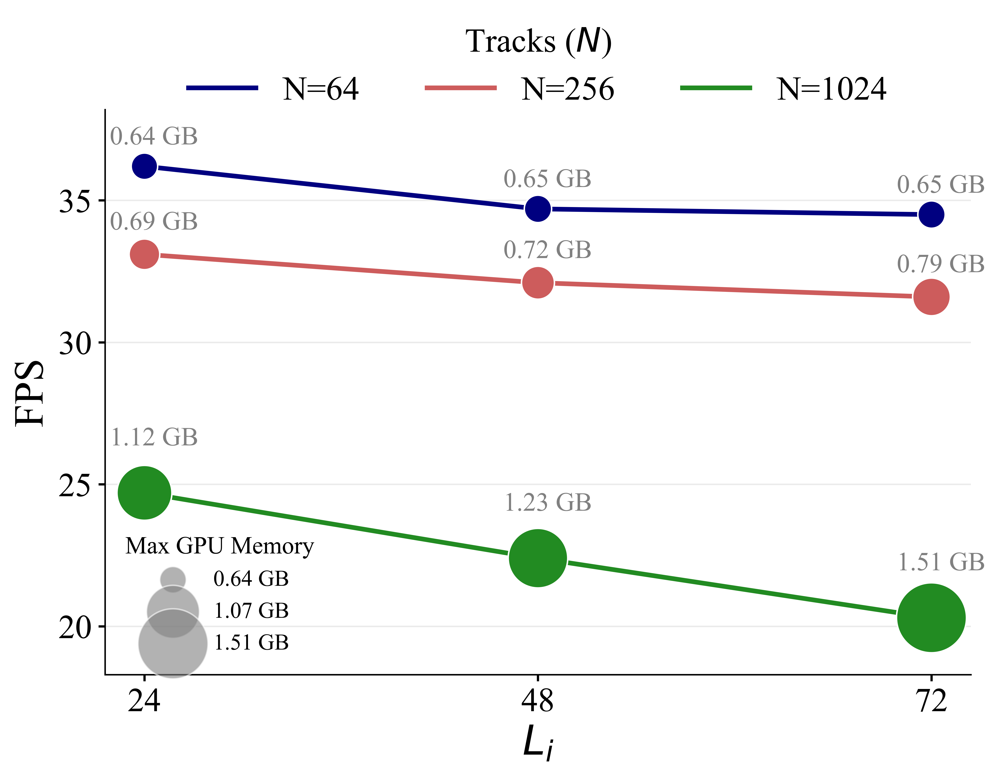

Enhancing Online Point Tracking with Memory
Method Overview

We introduce Track-On2, a simple transformer-based method for
online, frame-by-frame point tracking. The pipeline has three parts:
(i) Visual Encoder bottom-left,
which extracts multi-scale features from each frame with a DINOv3-based ViT-Adapter and
fuses them via an FPN;
(ii) Query Decoder, which decodes interest-point
queries by attending to current-frame features and the memory propagated from the previous
frame;
(iii) Point Prediction right,
which estimates correspondences in a coarse-to-fine manner; first by patch classification
from feature similarity, then by offset regression from the top patch candidates. Before
selecting the top patches, we re-rank candidates by enriching each query with local
information from the top-k patches. After re-ranking, the refined queries are written
to memory for the next frame.
Quantitative Results
We report δavg for BootsTAPNext-B, CoTracker3 (Video), and Track-On2 (higher is better).
Track-On2 achieves the best δavg; on four of five datasets (DAVIS, RoboTAP, Dynamic Replica, and PointOdyssey),
and is competitive on Kinetics. This evidences robustness across domains
(internet videos, robotics, synthetic scenes) and time scales, from short clips to very long sequences,
while operating fully online without future frames.
| Method | DAVIS | Kinetics | RoboTAP | Dynamic Replica |
Point Odyssey |
|---|---|---|---|---|---|
| BootsTAPNext | 78.5 | 70.6 | 75.0 | 46.2 | 9.9 |
| CoTracker3 | 76.9 | 67.8 | 78.0 | 72.3 | 44.5 |
| Track-On2 | 79.9 | 69.3 | 80.5 | 74.5 | 45.1 |
Efficiency
Inference efficiency vs. memory length (Li) when tracking N points: with our default Li=72, Track-On2 tracks 256 points at >30 FPS using 0.79 GB; real-time capable.
Qualitative Results
Here, we provide qualitative results on three datasets: DAVIS, Kinetics, and RoboTAP.Paper
Track-On2: ...
Gorkay Aydemir, Weidi Xie and Fatma Guney
ICLR 2025
@article{Aydemir2025TrackOn2,
title={{Track-On2}: Enhancing Online Point Tracking with Memory},
author={Aydemir, G\"orkay and Xie, Weidi and G\"uney, Fatma},
journal={arXiv preprint arXiv:2509.19115},
year={2025}
}